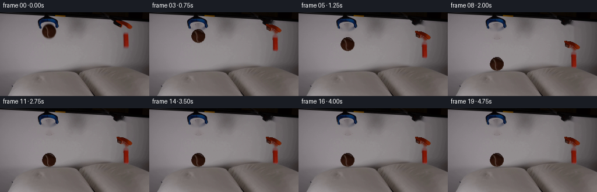
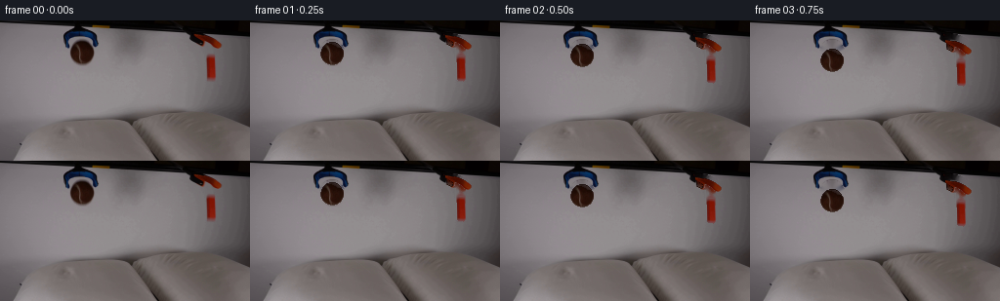

CODING AGENTS AS PIXEL WORLD MODELS
traex/Seed-2.1-Pro-0915 · 0001
点击播放 · 原生 RGB 像素
此结果可播放，但该运行尚未通过最终提交审核。页面展示不代表评测通过。
逐轮保存的候选
回放视频、检查图与代码变化。
每份候选均可单独播放。实际图片检查记录在下方工具轨迹中。
候选 01播放与检查图
点击播放 · 原生 RGB 像素


展开代码变化
--- 上一保存版本
+++ 本次保存版本
@@ -0,0 +1,170 @@
+"""Generate the 20-frame RGB video described in prompt.txt.
+
+The two held objects (a brown tennis ball on the left and an orange block on
+the right) are released by the static grabber tools and fall under gravity
+onto the surfaces below. Frame 00 is the untouched first frame.
+
+Pipeline:
+ 1. Segment the two warm-colored objects from first_frame.png (HSV threshold
+ + connected components + column-wise solid fill).
+ 2. Inpaint the background once so translated objects leave a clean static
+ scene behind them.
+ 3. Cut each object as an RGBA sprite, filling interior gaps with inpainted
+ object shading.
+ 4. Animate constant-gravity drops with a small damped bounce for the ball,
+ then composite over the static background.
+"""
+
+from pathlib import Path
+
+import cv2
+import numpy as np
+from PIL import Image
+from scipy import ndimage
+
+import artifact_io
+
+CASE_DIR = Path(__file__).resolve().parent
+N_FRAMES = 20
+
+
+def warm_hue_map(frame_f):
+ """Return (hue in degrees, saturation, value) for an RGB float frame."""
+ r, g, b = frame_f[..., 0], frame_f[..., 1], frame_f[..., 2]
+ mx = frame_f.max(axis=2)
+ mn = frame_f.min(axis=2)
+ diff = np.maximum(mx - mn, 1e-6)
+ sat = (mx - mn) / np.maximum(mx, 1e-6)
+ hue = np.zeros_like(mx)
+ nz = (mx - mn) > 0
+ idx = nz & (mx == r)
+ hue[idx] = ((g[idx] - b[idx]) / diff[idx]) % 6.0
+ idx = nz & (mx == g)
+ hue[idx] = (b[idx] - r[idx]) / diff[idx] + 2.0
+ idx = nz & (mx == b)
+ hue[idx] = (r[idx] - g[idx]) / diff[idx] + 4.0
+ hue *= 60.0
+ return hue, sat, mx
+
+
+def segment_object(frame_u8, frame_f, roi, sat_thr, val_thr, min_area):
+ """Return (solid_mask, rgb_frame_with_interior_filled) for one object."""
+ x0, y0, x1, y1 = roi
+ hue, sat, val = warm_hue_map(frame_f)
+ raw = ((hue < 48) | (hue > 340)) & (sat > sat_thr) & (val > val_thr)
+ cand = np.zeros(frame_u8.shape[:2], np.uint8)
+ cand[y0:y1, x0:x1] = raw[y0:y1, x0:x1]
+
+ n, labels, stats, _ = cv2.connectedComponentsWithStats(cand, 8)
+ kept = np.zeros_like(cand)
+ for k in range(1, n):
+ if stats[k, cv2.CC_STAT_AREA] >= min_area:
+ kept[labels == k] = 1
+
+ # Column-wise solid fill between topmost and bottommost detected pixel.
+ solid = np.zeros_like(kept)
+ for x in range(x0, x1):
+ ys = np.where(kept[:, x] > 0)[0]
+ if ys.size:
+ solid[ys.min():ys.max() + 1, x] = 1
+ solid = cv2.morphologyEx(solid, cv2.MORPH_CLOSE, np.ones((1, 5), np.uint8))
+ solid = cv2.morphologyEx(solid, cv2.MORPH_OPEN, np.ones((3, 1), np.uint8))
+ solid = ndimage.binary_fill_holes(solid).astype(np.uint8)
+
+ # Repaint interior holes (e.g. the block's handle gap) with object colors.
+ interior_hole = (solid.astype(bool) & (kept == 0)).astype(np.uint8)
+ filled = frame_u8.copy()
+ if interior_hole.any():
+ filled = cv2.inpaint(filled, interior_hole, 4, cv2.INPAINT_TELEA)
+ return solid.astype(bool), filled
+
+
+def cut_sprite(frame_u8, mask, fill_source):
+ ys, xs = np.where(mask)
+ x0, x1 = xs.min(), xs.max() + 1
+ y0, y1 = ys.min(), ys.max() + 1
+ rgb = fill_source[y0:y1, x0:x1].copy()
+ alpha = mask[y0:y1, x0:x1].copy()
+ return rgb, alpha, (x0, y0, x1, y1)
+
+
+def paste_sprite(canvas, rgb, alpha, ox, oy):
+ """Alpha-blend a sprite onto canvas at integer offset, clipped to bounds."""
+ h, w = alpha.shape
+ H, W = canvas.shape[:2]
+ xa0, ya0 = max(ox, 0), max(oy, 0)
+ xa1, ya1 = min(ox + w, W), min(oy + h, H)
+ if xa0 >= xa1 or ya0 >= ya1:
+ return
+ sx0, sy0 = xa0 - ox, ya0 - oy
+ sx1, sy1 = sx0 + (xa1 - xa0), sy0 + (ya1 - ya0)
+ a = alpha[sy0:sy1, sx0:sx1, None].astype(np.float32)
+ canvas[ya0:ya1, xa0:xa1] = (
+ a * rgb[sy0:sy1, sx0:sx1] + (1.0 - a) * canvas[ya0:ya1, xa0:xa1]
+ ).astype(np.uint8)
+
+
+def ball_trajectory(frame_index, total_drop, impact_frame=8, bounce_frames=4):
+ """Vertical offset in pixels: parabolic drop then a short damped bounce."""
+ f = frame_index
+ if f <= impact_frame:
+ return total_drop * (f / impact_frame) ** 2
+ t = f - impact_frame
+ if t > bounce_frames:
+ return total_drop
+ rebound = 0.12 * total_drop * np.exp(-1.4 * t) * np.cos(np.pi * t / 2.0)
+ return total_drop - rebound
+
+
+def block_trajectory(frame_index, total_drop, impact_frame=7):
+ f = frame_index
+ if f <= impact_frame:
+ return total_drop * (f / impact_frame) ** 2
+ # Heavy block: lands and stays put without rebound.
+ return float(round(total_drop))
+
+
+def main():
+ frame0 = np.array(Image.open(CASE_DIR / "first_frame.png").convert("RGB"))
+ frame_f = frame0.astype(np.float32) / 255.0
+
+ ball_mask, ball_fill = segment_object(
+ frame0, frame_f, roi=(68, 14, 104, 50),
+ sat_thr=0.22, val_thr=0.10, min_area=25)
+ block_mask, block_fill = segment_object(
+ frame0, frame_f, roi=(193, 9, 232, 66),
+ sat_thr=0.28, val_thr=0.10, min_area=25)
+
+ # Static background: remove both objects with a small dilation margin.
+ remove = cv2.dilate((ball_mask | block_mask).astype(np.uint8),
+ np.ones((3, 3), np.uint8), iterations=1)
+ background = cv2.inpaint(frame0, remove, 3, cv2.INPAINT_TELEA)
+
+ ball_rgb, ball_a, ball_bbox = cut_sprite(frame0, ball_mask, ball_fill)
+ block_rgb, block_a, block_bbox = cut_sprite(frame0, block_mask, block_fill)
+
+ # Landing targets: bottom of each sprite rests on the surface below.
+ ball_rest_bottom = 101
+ block_rest_bottom = 97
+ ball_drop = ball_rest_bottom - ball_bbox[3]
+ block_drop = block_rest_bottom - block_bbox[3]
+
+ frames = [frame0.copy()]
+ for f in range(1, N_FRAMES):
+ canvas = background.copy()
+ paste_sprite(canvas, ball_rgb, ball_a, ball_bbox[0],
+ int(round(ball_bbox[1] + ball_trajectory(f, ball_drop))))
+ paste_sprite(canvas, block_rgb, block_a, block_bbox[0],
+ int(round(block_bbox[1] + block_trajectory(f, block_drop))))
+ frames.append(canvas)
+
+ frames = np.stack(frames, axis=0).astype(np.uint8)
+ assert frames.shape == (N_FRAMES, 144, 256, 3)
+ assert np.array_equal(frames[0], frame0), "frame 00 must match first_frame.png"
+ artifact_io.save(frames, CASE_DIR)
+ print(f"saved {N_FRAMES} frames; ball drop={ball_drop}px, block drop={block_drop}px")
+ print("ball bbox", ball_bbox, "block bbox", block_bbox)
+
+
+if __name__ == "__main__":
+ main()
可观测工具轨迹
实际执行的命令与返回图片。
命令 1exit 0
/bin/bash -lc 'cat prompt.txt; echo "====RULES===="; cat GENERATION_RULES.md; echo "====LS===="; ls -la'
命令 2exit 0
/bin/bash -lc "cat artifact_io.py; echo \"====\"; python3 -c \"from PIL import Image; im=Image.open('first_frame.png'); print(im.size, im.mode)\""命令 3exit 0
/bin/bash -lc "cd . && python3 - <<'PY'
import numpy as np
from PIL import Image
im=np.array(Image.open('first_frame.png').convert('RGB'))
print(im.shape)
# unique colors count and top colors
flat=im.reshape(-1,3)
cols,counts=np.unique(flat,axis=0,return_counts=True)
order=np.argsort(-counts)
for i in order[:25]:
print(cols[i],counts[i])
print(\"num unique\",len(cols))
PY"命令 4exit 0
/bin/bash -lc "cd . && python3 - <<'PY'
import numpy as np
from PIL import Image
im=np.array(Image.open('first_frame.png').convert('RGB'))
R,G,B=im[...,0],im[...,1],im[...,2]
# orange: high R, mid G, low B
orange=(R>150)&(G>70)&(G<170)&(B<90)&(R-G>40)
# brown tennis: brownish
brown=(R>80)&(R<170)&(G>40)&(G<120)&(B<90)&(R>G)&(G>=B)
for name,mask in [('orange',orange),('brown',brown)]:
ys,xs=np.where(mask)
print(name, mask.sum(), (xs.min(),ys.min(),xs.max(),ys.max()) if len(xs) else None)
# print coarse grid
small=np.array(Image.fromarray(im).resize((64,36)))
# classify each cell
def cls(p):
r,g,b=p
if r>150 and 70<g<170 and b<90 and r-g>40: return 'O'
if 80<r<170 and 40<g<120 and b<90 and r>g: return 'B'
return '.'
for y in range(36):
print(''.join(cls(small[y,x]) for x in range(64)))
PY"命令 5exit 0
/bin/bash -lc "cd . && python3 - <<'PY'
import numpy as np
from PIL import Image
im=np.array(Image.open('first_frame.png').convert('RGB'))
small=np.array(Image.fromarray(im).resize((85,38)))
lum=(0.299*small[...,0]+0.587*small[...,1]+0.114*small[...,2])
chars=\" .:-=+*#%@\"
for y in range(38):
print(''.join(chars[min(9,int(v/26))] for v in lum[y]))
PY"命令 6exit 0
/bin/bash -lc "cd . && python3 - <<'PY'
import numpy as np
from PIL import Image
import colorsys
im=np.array(Image.open('first_frame.png').convert('RGB')).astype(np.int32)
R,G,B=im[...,0],im[...,1],im[...,2]
mx=im.max(2);mn=im.min(2)
sat=np.where(mx>0,(mx-mn)/np.maximum(mx,1),0)
print(\"sat distribution\", np.percentile(sat,[50,90,95,99,100]))
# high saturation mask
for thr in [0.2,0.3,0.4,0.5]:
m=sat>thr
print(thr,m.sum())
m=sat>0.25
ys,xs=np.where(m)
print(\"bbox\",xs.min(),ys.min(),xs.max(),ys.max())
# hue of saturated pixels
hues=[]
flat=im[m]
for p in flat[::max(1,len(flat)//20)]:
h,s,v=colorsys.rgb_to_hsv(*(p/255.0))
hues.append((round(h*360),round(s,2),round(v,2)))
print(hues)
PY"命令 7exit 0
/bin/bash -lc "cd . && python3 - <<'PY'
import numpy as np
from PIL import Image
import colorsys
im=np.array(Image.open('first_frame.png').convert('RGB')).astype(np.float32)/255
R,G,B=im[...,0],im[...,1],im[...,2]
mx=im.max(2);mn=im.min(2)
sat=(mx-mn)/np.maximum(mx,1e-6)
m=(sat>0.35)&(mx>0.35)
print(\"count\",m.sum())
ys,xs=np.where(m)
if len(xs): print(\"bbox\",xs.min(),ys.min(),xs.max(),ys.max())
# connected components via scipy? label manually with scipy
from scipy import ndimage
lab,n=ndimage.label(m)
print(\"components\",n)
for i in range(1,n+1):
yy,xx=np.where(lab==i)
if len(xx)<15: continue
vals=im[lab==i]
mean=vals.mean(0)
h,s,v=colorsys.rgb_to_hsv(*mean)
print(i,\"n\",len(xx),\"bbox\",xx.min(),yy.min(),xx.max(),yy.max(),\"meanRGB\",mean.round(2),\"hue\",round(h*360),\"sat\",round(s,2),\"val\",round(v,2))
PY"命令 8exit 0
/bin/bash -lc "cd . && python3 - <<'PY'
import numpy as np
from PIL import Image
import colorsys
from scipy import ndimage
im=np.array(Image.open('first_frame.png').convert('RGB')).astype(np.float32)/255
R,G,B=im[...,0],im[...,1],im[...,2]
mx=im.max(2);mn=im.min(2)
sat=(mx-mn)/np.maximum(mx,1e-6)
m=(sat>0.18)&(mx>0.25)
lab,n=ndimage.label(m)
print(\"components\",n,\"count\",m.sum())
out=[]
for i in range(1,n+1):
yy,xx=np.where(lab==i)
if len(xx)<25: continue
vals=im[lab==i]
mean=vals.mean(0)
h,s,v=colorsys.rgb_to_hsv(*mean)
out.append((len(xx),xx.min(),yy.min(),xx.max(),yy.max(),mean.round(2),round(h*360),round(s,2),round(v,2)))
for o in sorted(out,reverse=True):
print(o)
PY"命令 9exit 0
/bin/bash -lc "cd . && python3 - <<'PY'
import numpy as np
from PIL import Image
import colorsys
im=np.array(Image.open('first_frame.png').convert('RGB')).astype(np.float32)/255
def letter(p):
r,g,b=p; mx=p.max();mn=p.min()
if mx<0.08: return ' '
s=(mx-mn)/max(mx,1e-6)
if s<0.18:
v=mx
return ' .:-=+*#%@'[min(9,int(v*10))]
h,s,v=colorsys.rgb_to_hsv(r,g,b)
d=h*360
if d<15 or d>345: return 'R'
if d<45: return 'O' # orange/brown
if d<70: return 'Y'
if d<170: return 'G'
if d<250: return 'B'
if d<290: return 'P'
return 'M'
for (x0,y0,x1,y1,name) in [(70,0,125,55,'LEFT'),(190,5,240,75,'RIGHT')]:
print('====',name)
crop=im[y0:y1,x0:x1]
for y,row in enumerate(crop):
print(f'{y0+y:3d} '+''.join(letter(p) for p in row))
PY"命令 10exit 0
/bin/bash -lc "cd . && python3 - <<'PY'
import numpy as np
from PIL import Image
import colorsys
im=np.array(Image.open('first_frame.png').convert('RGB')).astype(np.float32)/255
def letter(p):
r,g,b=p; mx=p.max();mn=p.min()
if mx<0.08: return ' '
s=(mx-mn)/max(mx,1e-6)
if s<0.18:
return ' .:-=+*#%@'[min(9,int(mx*10))]
h,s,v=colorsys.rgb_to_hsv(r,g,b)
d=h*360
if d<15 or d>345: return 'R'
if d<45: return 'O'
if d<70: return 'Y'
if d<170: return 'G'
if d<250: return 'B'
if d<290: return 'P'
return 'M'
small=np.array(Image.fromarray((im*255).astype(np.uint8)).resize((128,48)))
for y,row in enumerate(small):
print(f'{y*3:3d} '+''.join(letter(p/255.0) for p in row))
PY"命令 11exit 0
/bin/bash -lc "cd . && python3 -c \"import cv2; print('cv2',cv2.__version__)\" 2>&1 | head -1; python3 - <<'PY'
import numpy as np
from PIL import Image
im=np.array(Image.open('first_frame.png').convert('RGB')).astype(np.float32)/255
lum=(0.299*im[...,0]+0.587*im[...,1]+0.114*im[...,2])
# column luminance profile at object x centers
for x in [92,213]:
col=lum[:,x]
print('x',x)
for y in range(0,144,6):
print(y, round(float(col[y]),2), end=' | ')
print()
PY"命令 12exit 0
/bin/bash -lc "cd . && python3 -c \"import cv2; print(cv2.__version__)\"; python3 - <<'PY'
import numpy as np
from PIL import Image
import colorsys
im=np.array(Image.open('first_frame.png').convert('RGB')).astype(np.float32)/255
def letter(p):
r,g,b=p; mx=p.max();mn=p.min()
if mx<0.08: return ' '
s=(mx-mn)/max(mx,1e-6)
if s<0.22:
return ' .:-=+*#%@'[min(9,int(mx*10))]
h,s,v=colorsys.rgb_to_hsv(r,g,b)
d=h*360
if d<15 or d>345: return 'R'
if d<45: return 'O'
if d<70: return 'Y'
if d<170: return 'G'
if d<250: return 'B'
return 'P'
for (x0,y0,x1,y1,name) in [(72,18,114,48,'BALL'),(196,10,230,32,'BLOCK TOP'),(205,30,226,64,'BLOCK MID')]:
print('====',name)
crop=im[y0:y1,x0:x1]
for y,row in enumerate(crop):
print(f'{y0+y:3d} '+''.join(letter(p) for p in row))
PY"命令 13exit 0
/bin/bash -lc "cd . && python3 - <<'PY'
import numpy as np
from PIL import Image
import colorsys
im=np.array(Image.open('first_frame.png').convert('RGB')).astype(np.float32)/255
def cls(p):
r,g,b=p;mx=p.max();mn=p.min();s=(mx-mn)/max(mx,1e-6)
if s>=0.22:
h=colorsys.rgb_to_hsv(r,g,b)[0]*360
if h<15 or h>345:return 'R'
if h<45:return 'O'
if h<250:return 'B'
return 'P'
return ' .:-=+*#%@'[min(9,int(mx*10))]
for x in [85,92,100]:
print('--- column x',x)
s=''
for y in range(40,110):
s+=cls(im[y,x])
print('y40:',s)
for x in [210,215,220]:
print('--- column x',x)
s=''
for y in range(55,120):
s+=cls(im[y,x])
print('y55:',s)
PY"命令 14exit 0
/bin/bash -lc "cd . && python3 - <<'PY'
import numpy as np
from PIL import Image
import colorsys
im=np.array(Image.open('first_frame.png').convert('RGB')).astype(np.float32)/255
# vectorized hue
r,g,b=im[...,0],im[...,1],im[...,2]
mx=im.max(2);mn=im.min(2);d=mx-mn
sat=d/np.maximum(mx,1e-6)
hue=np.zeros_like(mx)
mask=d>0
idx=mask&(mx==r);hue[idx]=((g[idx]-b[idx])/d[idx])%6
idx=mask&(mx==g);hue[idx]=(b[idx]-r[idx])/d[idx]+2
idx=mask&(mx==b);hue[idx]=(r[idx]-g[idx])/d[idx]+4
hue=hue*60
warm=((hue<45)|(hue>345))&(sat>0.30)&(mx>0.15)
# Ball roi
def report(x0,y0,x1,y1,label):
m=np.zeros_like(warm);m[y0:y1,x0:x1]=warm[y0:y1,x0:x1]
ys,xs=np.where(m)
print(label,'n',m.sum(),'bbox',xs.min(),ys.min(),xs.max(),ys.max())
# per-row x extents
for y in range(ys.min(),ys.max()+1):
xx=np.where(m[y])[0]
if len(xx): print(y, xx.min(),xx.max(),len(xx))
report(74,16,114,50,'BALL')
report(194,10,232,64,'BLOCK')
PY"命令 15exit 0
/bin/bash -lc "cd . && python3 - <<'PY'
import numpy as np
from PIL import Image
im=np.array(Image.open('first_frame.png').convert('RGB')).astype(np.float32)/255
lum=(0.299*im[...,0]+0.587*im[...,1]+0.114*im[...,2])
chars=\"@%#*+=-:. \"
# print rows 40..143 every 2, cols every 2 => 128 wide x52
for y in range(40,144,2):
row=lum[y]
print(f'{y:3d} '+''.join(chars[min(9,int((1-v)*10))] for v in row[::2]))
PY"命令 16exit 0
/bin/bash -lc "cd . && python3 - <<'PY'
import numpy as np
from PIL import Image
from scipy import ndimage
im=np.array(Image.open('first_frame.png').convert('RGB')).astype(np.float32)/255
lum=(0.299*im[...,0]+0.587*im[...,1]+0.114*im[...,2])
# examine bottom 50 rows: column-wise luminance to find pillow bright blobs
region=lum[100:144,:]
colmean=region.mean(0)
# print column groups where mean brightness high
thr=0.45
groups=[]
inb=False
for x,v in enumerate(colmean):
if v>thr and not inb: start=x;inb=True
if (v<=thr or x==255) and inb:
groups.append((start,x));inb=False
print(\"bright col groups (mean>0.45) y100-143:\",groups)
# row-wise: find pillow top edge per column group
for (a,b) in groups:
sub=lum[:,a:b+1]
rowmean=sub.mean(1)
top=np.argmax(rowmean>0.45)
print(\"group\",a,b,\"first row mean>0.45:\",top, \"max\",round(rowmean.max(),2))
# Try threshold bright pixels in lower half and label
m=(lum>0.5)
m[:95,:]=False
lab,n=ndimage.label(m)
print(\"bright comps lower half:\")
for i in range(1,n+1):
ys,xs=np.where(lab==i)
if len(xs)<40:continue
print(i,\"n\",len(xs),\"bbox x\",xs.min(),xs.max(),\"y\",ys.min(),ys.max())
PY"命令 17exit 0
/bin/bash -lc "cd . && python3 - <<'PY'
import numpy as np
from PIL import Image
im=np.array(Image.open('first_frame.png').convert('RGB')).astype(np.float32)/255
lum=(0.299*im[...,0]+0.587*im[...,1]+0.114*im[...,2])
chars=\"@%#*+=-:. \"
print(\"FULL bottom, each char=1px width but rows sampled; x labels\")
# print region x0-256 but downsample x by 2 and show numeric columns header
print(' '+' '.join(str((x//10)%10) for x in range(0,256,4)))
for y in range(95,144,2):
print(f'{y:3d} '+''.join(chars[min(9,int((1-lum[y,x])*10))] for x in range(0,256,2)))
PY"命令 18exit 0
/bin/bash -lc "cd . && python3 - <<'PY'
import numpy as np
from PIL import Image
from scipy import ndimage
im=np.array(Image.open('first_frame.png').convert('RGB')).astype(np.float32)/255
lum=(0.299*im[...,0]+0.587*im[...,1]+0.114*im[...,2])
# Segment lower scene (table/pillows) via threshold and connectivity, y>85
m=lum>0.33
m[:85,:]=False
# remove tiny
lab,n=ndimage.label(m)
print(\"components lum>0.33 below y85:\")
for i in range(1,n+1):
ys,xs=np.where(lab==i)
if len(xs)<80:continue
print(i,\"n\",len(xs),\"x\",xs.min(),xs.max(),\"y\",ys.min(),ys.max())
# Build top-edge heightmap: for each x, first y in 85..143 where lum>0.38
top=np.full(256,-1)
for x in range(256):
col=lum[85:,x]
idx=np.argmax(col>0.38)
if col[idx]>0.38: top[x]=85+idx
print(\"top edge per x (0.38), sampled:\")
for x in range(0,256,8):
print(x,int(top[x]),end=' | ')
print()
# Also print mean lum lower to distinguish pillow vs table
PY"命令 19exit 0
/bin/bash -lc "cd . && python3 - <<'PY'
import numpy as np
from PIL import Image
from scipy import ndimage
im=np.array(Image.open('first_frame.png').convert('RGB')).astype(np.float32)/255
lum=(0.299*im[...,0]+0.587*im[...,1]+0.114*im[...,2])
gy=np.abs(np.diff(lum,axis=0))
# Strong horizontal edges in lower region
for y in range(88,143):
row=gy[y]
xs=np.where(row>0.12)[0]
if len(xs):
# group
groups=[];s=xs[0];p=xs[0]
for x in xs[1:]:
if x-p>3: groups.append((s,p));s=x
p=x
groups.append((s,p))
groups=[g for g in groups if g[1]-g[0]>=2]
if groups: print(y,groups)
PY"命令 20exit 1
/bin/bash -lc "cd . && python3 - <<'PY'
import numpy as np
from PIL import Image
from scipy import ndimage
im=np.array(Image.open('first_frame.png').convert('RGB')).astype(np.float32)/255
r,g,b=im[...,0],im[...,1],im[...,2]
mx=im.max(2);mn=im.min(2);d=mx-mn
sat=d/np.maximum(mx,1e-6)
hue=np.zeros_like(mx);mask=d>0
idx=mask&(mx==r);hue[idx]=((g[idx]-b[idx])/d[idx])%6
idx=mask&(mx==g);hue[idx]=(b[idx]-r[idx])/d[idx]+2
idx=mask&(mx==b);hue[idx]=(r[idx]-g[idx])/d[idx]+4
hue*=60
warm=((hue<45)|(hue>345))
def extract(roi,satthr,valthr,close_v=0,fill=True,dilate=0):
x0,y0,x1,y1=roi
m=np.zeros(im.shape[:2],bool)
sub=warm&(sat>satthr)&(mx>valthr)
m[y0:y1,x0:x1]=sub[y0:y1,x0:x1]
lab,n=ndimage.label(m)
# keep components with size, choose union of all in roi then largest few
sizes=ndimage.sum(np.ones_like(lab),lab,range(1,n+1))
keep=np.zeros_like(m)
for i in range(1,n+1):
if sizes[i-1]>=20: keep|=(lab==i)
if close_v:
keep=ndimage.binary_closing(keep,structure=np.ones((close_v,1)))
keep=ndimage.binary_closing(keep,structure=np.ones((1,3)))
if fill:
keep=ndimage.binary_fill_holes(keep)
if dilate:
keep=ndimage.binary_dilation(keep,iterations=dilate)
ys,xs=np.where(keep)
return keep,(xs.min(),ys.min(),xs.max(),ys.max())
ball,bb=extract((70,16,102,50),0.25,0.12,close_v=6,fill=True,dilate=1)
print(\"ball\",ball.sum(),bb)
block,bk=extract((194,10,232,64),0.30,0.12,close_v=10,fill=True,dilate=1)
print(\"block\",block.sum(),bk)
# Save masks overlaid stats: check fill produced compact shapes
for name,m in [('ball',ball),('block',block)]:
ys,xs=np.where(m)
print(name,'width',xs.max()-xs.min()+1,'height',ys.max()-ys.min()+1,'fill ratio',m.sum()/((xs.max()-xs.min()+1)*(ys.max()-ys.min()+1)))
np.save('/tmp/masks.npy',{'ball':ball,'block':block},allow_pickle=True)
PY"命令 21exit 0
/bin/bash -lc "cd . && python3 - <<'PY'
import numpy as np
from PIL import Image
im=np.array(Image.open('first_frame.png').convert('RGB')).astype(np.float32)/255
lum=(0.299*im[...,0]+0.587*im[...,1]+0.114*im[...,2])
# print small numeric luminance maps in two windows under the objects
for (x0,x1,name) in [(60,120,'UNDER BALL'),(185,240,'UNDER BLOCK')]:
print('===',name)
for y in range(88,124,2):
vals=lum[y,x0:x1]
print(f'{y:3d} '+ ' '.join(f'{v:.2f}'[1:] for v in vals[::2]))
PY"命令 22exit 0
/bin/bash -lc "cd . && python3 - <<'PY'
import numpy as np
from PIL import Image
im=np.array(Image.open('first_frame.png').convert('RGB')).astype(np.float32)/255
lum=(0.299*im[...,0]+0.587*im[...,1]+0.114*im[...,2])
chars=\"@%#*+=-:. \"
for half,(x0,x1) in [('LEFT 0-127',(0,128)),('RIGHT 128-255',(128,256))]:
print('====',half)
print(' '+' '.join(str((x//10)%10) for x in range(x0,x1,2)))
for y in range(98,144,1):
print(f'{y:3d} '+''.join(chars[min(9,int((1-lum[y,x])*10))] for x in range(x0,x1,2)))
PY"命令 23exit 0
/bin/bash -lc "cd . && python3 - <<'PY'
import numpy as np
from PIL import Image
from scipy import ndimage
im=np.array(Image.open('first_frame.png').convert('RGB')).astype(np.float32)/255
lum=(0.299*im[...,0]+0.587*im[...,1]+0.114*im[...,2])
k=np.ones((5,5))/25
mean=ndimage.convolve(lum,k)
sq=ndimage.convolve(lum*lum,k)
std=np.sqrt(np.maximum(sq-mean*mean,0))
chars=\" .:-=+*#%@\"
print(\"local std map (y88-143, x step2)\")
for y in range(88,144,2):
print(f'{y:3d} '+''.join(chars[min(9,int(std[y,x]*40))] for x in range(0,256,2)))
PY"命令 24exit 0
/bin/bash -lc "cd . && python3 - <<'PY'
import numpy as np
from PIL import Image
from scipy import ndimage
im=np.array(Image.open('first_frame.png').convert('RGB')).astype(np.float32)/255
lum=(0.299*im[...,0]+0.587*im[...,1]+0.114*im[...,2])
k=np.ones((5,5))/25
mean=ndimage.convolve(lum,k);std=np.sqrt(np.maximum(ndimage.convolve(lum*lum,k)-mean*mean,0))
m=std>0.03
m[:88,:]=False
lab,n=ndimage.label(m)
for i in range(1,n+1):
ys,xs=np.where(lab==i)
if len(xs)<60:continue
print(\"comp\",i,\"n\",len(xs),\"x\",xs.min(),xs.max(),\"y\",ys.min(),ys.max(),\"cx\",(xs.min()+xs.max())//2)
# Build approximate pillow top profile: for each x, first y where std>0.025
top=np.full(256,-1)
for x in range(256):
col=std[88:,x]
idx=np.argmax(col>0.025)
if col[idx]>0.025: top[x]=88+idx
print(\"pillow top edge per x (std>0.025):\")
for x in range(0,256,4):
t=top[x]
print(x, int(t) if t>=0 else '.', end=' | ')
print()
PY"命令 25exit 0
/bin/bash -lc "cd . && python3 - <<'PY'
import numpy as np, cv2
from PIL import Image
from scipy import ndimage
img=np.array(Image.open('first_frame.png').convert('RGB'))
f=img.astype(np.float32)/255
r,g,b=f[...,0],f[...,1],f[...,2]
mx=f.max(2);mn=f.min(2);d=mx-mn
sat=d/np.maximum(mx,1e-6)
hue=np.zeros_like(mx);m=d>0
i=m&(mx==r);hue[i]=((g[i]-b[i])/d[i])%6
i=m&(mx==g);hue[i]=(b[i]-r[i])/d[i]+2
i=m&(mx==b);hue[i]=(r[i]-g[i])/d[i]+4
hue*=60
def make_mask(roi,satthr,valthr):
x0,y0,x1,y1=roi
base=(((hue<48)|(hue>340))&(sat>satthr)&(mx>valthr))
m=np.zeros(img.shape[:2],np.uint8);m[y0:y1,x0:x1]=base[y0:y1,x0:x1]
n,lab,stats,_=cv2.connectedComponentsWithStats(m,8)
out=np.zeros_like(m)
for k in range(1,n):
if stats[k,cv2.CC_STAT_AREA]>=30: out[lab==k]=1
out=cv2.morphologyEx(out,cv2.MORPH_CLOSE,np.ones((5,3),np.uint8))
out=ndimage.binary_fill_holes(out).astype(np.uint8)
out=cv2.dilate(out,np.ones((3,3),np.uint8),iterations=1)
out=ndimage.binary_fill_holes(out).astype(np.uint8)
return out
ball=make_mask((68,14,104,50),0.22,0.10)
block=make_mask((193,9,232,66),0.28,0.10)
for name,mm in [('ball',ball),('block',block)]:
ys,xs=np.where(mm)
print(name,'n',mm.sum(),'bbox',xs.min(),ys.min(),xs.max(),ys.max())
# inpaint test
obj=((ball|block)>0).astype(np.uint8)
inp=cv2.inpaint(img,obj,3,cv2.INPAINT_TELEA)
# ASCII of inpainted regions
def ascii_region(im,x0,y0,x1,y1,step=1):
lum=(0.299*im[...,0]+0.587*im[...,1]+0.114*im[...,2])/255
ch=\"@%#*+=-:. \"
for y in range(y0,y1,step):
print(f'{y:3d} '+''.join(ch[min(9,int((1-lum[y,x])*10))] for x in range(x0,x1,step)))
print(\"=== inpainted ball area\")
ascii_region(inp,70,16,102,50,1)
Image.fromarray(inp).save('.tmp/inpaint_test.png')
# diff magnitude inside mask vs surrounding
diff=np.abs(inp.astype(int)-img.astype(int)).sum(2)
print(\"mean diff inside mask\",diff[obj>0].mean(),\"at boundary ring\")
ring=cv2.dilate(obj,np.ones((3,3),np.uint8))-obj
print(\"mean diff ring\",diff[ring>0].mean())
PY"命令 26exit 0
/bin/bash -lc "cd . && python3 - <<'PY'
import numpy as np
from PIL import Image
from scipy import ndimage
im=np.array(Image.open('first_frame.png').convert('RGB')).astype(np.float32)/255
lum=(0.299*im[...,0]+0.587*im[...,1]+0.114*im[...,2])
k=np.ones((5,5))/25
mean=ndimage.convolve(lum,k);std=np.sqrt(np.maximum(ndimage.convolve(lum*lum,k)-mean*mean,0))
print(\"std grid x145-235 step3, y88-120 step2 (values*100)\")
print(' '+' '.join(f'{x:3d}' for x in range(145,236,3)))
for y in range(88,120,2):
print(f'{y:3d} '+' '.join(f'{int(std[y,x]*100):3d}' for x in range(145,236,3)))
PY"命令 27exit 0
/bin/bash -lc "cd . && python3 - <<'PY'
import numpy as np
from PIL import Image
im=np.array(Image.open('first_frame.png').convert('RGB')).astype(np.float32)/255
# inspect the gap region of the block
for y in range(26,38):
print(y, ' '.join(f'[{im[y,x,0]:.2f},{im[y,x,1]:.2f},{im[y,x,2]:.2f}]' for x in range(208,224,2)))
PY"命令 28exit 0
/bin/bash -lc "cd . && python3 - <<'PY'
import numpy as np
from PIL import Image
from scipy import ndimage
im=np.array(Image.open('first_frame.png').convert('RGB')).astype(np.float32)/255
lum=(0.299*im[...,0]+0.587*im[...,1]+0.114*im[...,2])
# mean luminance per row over x195-230 to locate surface transitions
for x0,x1,lbl in [(195,230,'block column'),(60,110,'ball column')]:
print('===',lbl)
prev=None
for y in range(85,130):
v=lum[y,x0:x1].mean()
dv='' if prev is None else f'{v-prev:+.3f}'
print(y,round(v,3),dv)
prev=v
PY"命令 29exit 0
/bin/bash -lc 'cd . && python3 generate.py && ls -la frames | head -8 && ls -la pixels.npz task_spec.json 2>/dev/null; ls'
命令 30exit 0
/bin/bash -lc "cd . && python3 - <<'PY'
import numpy as np
from PIL import Image
# verify exact frame0 identity
f0=np.array(Image.open('first_frame.png').convert('RGB'))
g0=np.array(Image.open('frames/00.png').convert('RGB'))
print(\"frame00 identical:\", np.array_equal(f0,g0))
# track warm-pixel centroid/bbox per frame in two ROIs
def warm_stats(frame,x0,x1,y0=0,y1=144):
f=frame.astype(np.float32)/255
r,g,b=f[...,0],f[...,1],f[...,2]
mx=f.max(2);mn=f.min(2);d=mx-mn
sat=d/np.maximum(mx,1e-6)
hue=np.zeros_like(mx);nz=d>0
i=nz&(mx==r);hue[i]=((g[i]-b[i])/np.maximum(d[i],1e-6))%6
i=nz&(mx==g);hue[i]=(b[i]-r[i])/np.maximum(d[i],1e-6)+2
i=nz&(mx==b);hue[i]=(r[i]-g[i])/np.maximum(d[i],1e-6)+4
hue*=60
m=(((hue<48)|(hue>340))&(sat>0.28)&(mx>0.12))
mm=np.zeros_like(m);mm[y0:y1,x0:x1]=m[y0:y1,x0:x1]
ys,xs=np.where(mm)
if not len(xs): return None
return xs.min(),ys.min(),xs.max(),ys.max(),len(xs)
for fi in range(20):
fr=np.array(Image.open(f'frames/{fi:02d}.png').convert('RGB'))
bal=warm_stats(fr,60,115)
blk=warm_stats(fr,190,240)
print(fi,'ball',bal,'block',blk)
PY"保存候选 1 份；完成命令 30 次；可验证图片返回 0 张。原始 API 响应与完整日志保留在本地。